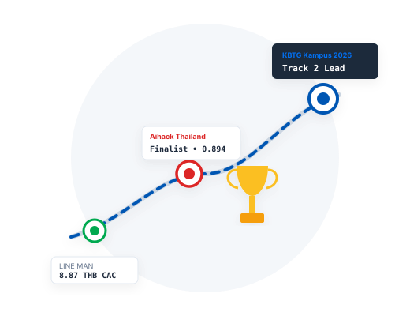

Engineering Journey
Demonstrated engineering leadership across national hackathons, quantitative financial challenges, and production data microservices.

Track 2 Lead • Data Science & Intelligence
Platform Leadership: Led engineering on K-Sentinel & WealthPilot, architecting an autonomous cashflow and real-time fraud defense platform for 3.2M young K PLUS mobile banking users.
Two-Tier Graph Architecture: Constructed Two-Tier Graph Inference combining offline PyTorch Geometric Relational GCN 16D node embeddings with ultra-low latency ONNX Runtime v1.30 serving.
Low-Latency SLA Achievement: Delivered 11.62ms P99 inference latency SLA (beating bank's < 80.0ms requirement by 7x; core ONNX evaluation = 0.27ms).
Financial Impact: Projected 1.2 – 2.0 Billion THB in low-cost CASA retail deposit mobilization through automated 6% dynamic micro-sweeping into K-eSavings Protected Vaults.
National Finalist • Long Overdue Debtor (LOD) Prediction
Quantitative Problem Framing: Formulated credit default models on ~40,000 real-world consumer loan records under extreme 1:12 class imbalance and blind evaluation partitions.
Feature Extraction & Optuna: Extracted temporal delinquency velocity ratios, credit exhaustion slopes, and 5-Fold Stratified Cross-Validation via Optuna Bayesian hyperparameter search.
Multi-Model Ensembling: Achieved 0.894 ROC-AUC via out-of-fold rank/probability blending combining CatBoost symmetric trees with LightGBM leaf-wise GBDT.
Asymmetric Risk Optimization: Formulated asymmetric cost-matrix threshold optimization balancing unrecovered default principal losses against lost customer margin.
AI & Data Science Lead • GuardianAI Clinical Frailty Engine
Healthcare System Design: Architected GuardianAI, an early clinical frailty and acute fall risk prediction engine for physician-facing triage queues.
Probability Calibration: Trained Platt-calibrated XGBoost model on multi-biometric physical gait indicators, producing interpretable clinical risk strata.
Clinical Explainability: Integrated localized SHAP attributions to decompose patient risk drivers directly into medical triage queues.
Containerized Serving: Deployed containerized asynchronous FastAPI scoring endpoints achieving sub-30ms response times with Docker.
Spatial Lead • 30m Grid Flash Flood Mapping
SAR Backscatter Segmentation: Extracted and segmented flood extent using Sentinel-1 Synthetic Aperture Radar (SAR) dual-polarization backscatter and Copernicus DEM elevation rasters.
High-Resolution Hazard Matrix: Generated granular 30-meter disaster risk hazard matrices for localized provincial resilience and evacuation planning.
Automated Pipeline: Engineered automated geospatial processing pipelines in Python utilizing GeoPandas, Rasterio, and Shapely.
Operational AI & System Reliability Lead
Enterprise Operations: Spearheaded enterprise operational intelligence and proactive telemetry monitoring under Team GrandGuardianAI.
Alerting Rules: Designed automated anomaly detection alerting rules across distributed microservice infrastructures.
Reliability Runbooks: Formulated system reliability benchmarks and operational runbooks for zero-downtime failover.
Unit Economics & Growth Analytics Lead
Unit Economics Optimization: Optimized digital acquisition funnel and unit economics, achieving an ultra-lean 8.87 THB Customer Acquisition Cost (CAC).
Volume & Budget Discipline: Acquired 462 verified university student conversions within a strict 8,000 THB total growth budget.
Cohort Modeling: Modeled multi-cohort retention curves, referral loops, and user lifetime value (LTV) dynamics using SQL and Python.